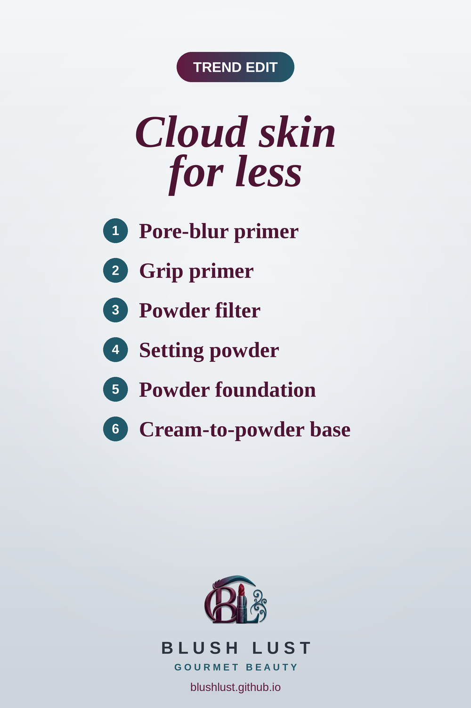

Cloud Skin for Less: 6 Blurring Drugstore Dupes
Soft-focus, velvety skin is one of 2026's biggest makeup trends. These blurring primers, powders and soft-matte bases copy the luxury favourites for a fraction of the price, all on Amazon.ca.
This post contains affiliate links. If you buy through them, we may earn a small commission at no extra cost to you. As an Amazon Associate I earn from qualifying purchases.
e.l.f. Poreless Putty Primer
A velvety balm-like primer that smooths the look of pores and gives a soft, silky base.
Shop the dupe on Amazon.ca →e.l.f. Power Grip Primer
A sticky, hydrating gel primer that helps makeup grip and last all day. The e.l.f. version sold out repeatedly when it went viral.
Shop the dupe on Amazon.ca →e.l.f. Halo Glow Powder Filter
A finely milled pressed powder that softens the look of pores and sets makeup with a blurred finish.
Shop the dupe on Amazon.ca →e.l.f. Halo Glow Setting Powder
A finely milled powder that sets makeup and blurs without looking cakey.
Shop the dupe on Amazon.ca →Maybelline Fit Me Matte + Poreless Pressed Powder
A lightweight pressed powder that controls shine and softly blurs pores for a smooth, matte finish.
Shop the dupe on Amazon.ca →Milani Conceal + Perfect 2-in-1 Foundation + Concealer
A full-coverage foundation and concealer in one, with a smooth, soft-matte finish.
Shop the dupe on Amazon.ca →
Prices change often — check Amazon.ca for the current price.